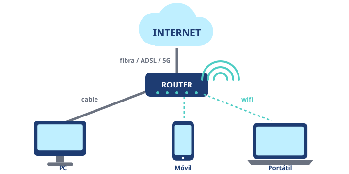

Módulo 9: Redes e Internet
Cómo se conectan tus dispositivos entre sí y con el resto del mundo.
Informática básica · Módulo 9 de 12
De tu casa al mundo
Una red son varios dispositivos conectados para compartir información. Internet es la red de redes: une millones de redes de todo el mundo.

En casa, el router reparte la conexión a Internet por cable y por wifi.
| Elemento | Qué es |
|---|---|
| Router | El aparato que conecta tu red de casa con Internet y crea el wifi. |
| Wifi | Conexión sin cables entre tus dispositivos y el router. |
| Cable de red (Ethernet) | Conexión con cable: más estable y rápida que el wifi. |
| Datos móviles (4G/5G) | Internet a través de la compañía de teléfono, fuera de casa. |
| Dirección IP | El «número de teléfono» de cada dispositivo en la red. |
| Navegador | El programa para ver páginas web: Firefox, Chrome, Edge, Safari… |
Internet no es solo la web
🌍
WebPáginas que visitas con el navegador.✉️
CorreoMensajes con archivos adjuntos.💬
MensajeríaChats, llamadas y videollamadas.☁️
NubeGuardar y compartir archivos en servidores.🎮
Juego onlinePartidas con otras personas.📺
StreamingMúsica y vídeo sin descargarlos.Seguridad básica: busca el candado 🔒 y
https:// al escribir datos, no te conectes a wifis públicas para cosas importantes y cambia la contraseña del wifi que trae el router de fábrica.🧩 ¿Qué aparato conecta la red de tu casa con Internet?
🧩 ¿Qué conexión suele ser más estable para jugar online?
Resumen: router + wifi/cable en casa, datos móviles fuera. Internet incluye web, correo, mensajería, nube, juegos y streaming.